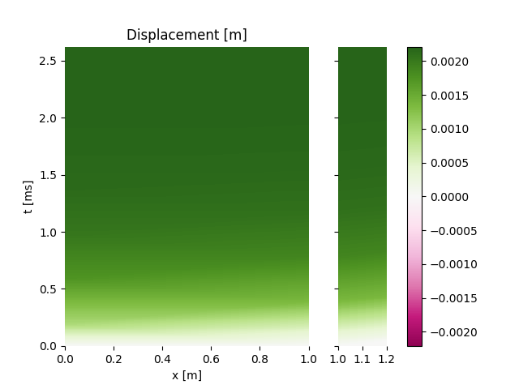

Note
Click here to download the full example code
Compare ElasticImpact and WP2¶
In the case of the impact of an elastic striker on a bar, compare the analytical
result given by ElasticImpact and the numerical result computed with
WP2.
import numpy as np
import matplotlib.pyplot as plt
from prop1D import WP2, Barhete, ElasticImpact
Define material parameters
E = 201e9 # Young modulus [Pa]
rho = 7800 # Density [kg/m3]
d1 = 0.02 # bar/stricker diameter [m]
d2 = 0.03 # bar/stricker diameter [m]
L = 1. # length of the striker [m]
Vo = 5. # intial striker velocity [m/s]
Analytical result with ElasticImpact¶
Three possible cases:
striker and bar have the same diameter
striker smaller than bar
striker larger than bar
time = np.linspace(-10e-6, 10e-3, num=1000)
EI = ElasticImpact(E, rho, d1, L, Vo)
EI.computeImpact(time) # time array must be given to the method
EI.plotForce('compare', label='ds=db')
EJ = ElasticImpact(E, rho, d=[d1, d2])
EJ.computeImpact(time)
EJ.plotForce('compare', label='ds<db')
EK = ElasticImpact(E, rho, d=[d2, d1])
EK.computeImpact(time)
EK.plotForce('compare', label='ds>db')
_ = plt.legend()
EK.plotRn() # plot amplitude of successive steps


Out:
comment calculer l'eq. 35 pour un choc viscoelastique??
comment calculer l'eq. 35 pour un choc viscoelastique??
comment calculer l'eq. 35 pour un choc viscoelastique??
ça va pas !!
Numerical result with WP2¶
Bar configuration: one striker and one bar at rest
striker = Barhete([E, E], [rho, rho], [L, .2], [d2, d1], nmin=6)
testk = WP2(striker, nstep=400, left='free', right='infinite', Vinit=Vo)
testk.plot('striker')
![Force [N]](../_images/sphx_glr_plot_3_ElasticImpact_003.png)
![Velocity [m/s]](../_images/sphx_glr_plot_3_ElasticImpact_004.png)
- 
Out:
Setting initial velocity of first segment (Vo=5)
Get force at at impacted side of the bar
f1, v1, x1, ind1 = testk.getSignal(x=0, iseg=1, plot=True)

Compare analytical and numerical solutions¶
plt.figure()
plt.plot(testk.time, f1, '-', label='num')
plt.plot(time, -EK.force, '--', label='ana')
plt.legend()
plt.xlim(xmax=2.7e-3)
Out:
(-0.0005105, 0.0027)
Total running time of the script: ( 0 minutes 2.731 seconds)